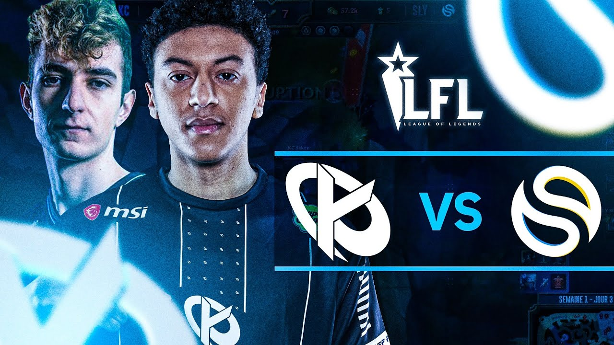

MSI 2025 : Gen.G écrase tout, G2 s'accroche mais chute en demi-finale
Gen.G a dominé le tournoi du début à la fin, s’imposant en grande finale contre JDG. G2, dernier espoir européen, s’incline avec les honneurs en demi-finale face aux Coréens. Une performance encourageante, mais toujours pas de finale pour l'Europe.
Lire l’article

LEC : BDS en tête, Fnatic surprend, Vitality inquiète
À mi-parcours du Summer Split, l'équipe BDS impressionne avec un jeu collectif propre. Fnatic retrouve des couleurs tandis que Vitality accumule les défaites, relançant les doutes sur sa structure.
Lire l’article

Karmine Corp vs Solary : Le classico LFL fait encore des étincelles
Dans une ambiance survoltée, Karmine Corp et Solary ont livré un match intense. Victoire de KC, mais les deux équipes restent proches au classement. L'engouement des fans ne faiblit pas.
Lire l’article